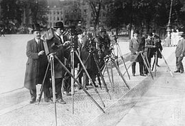
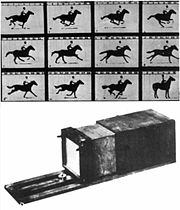

История кинематографа начала свой отсчёт 28 декабря 1895 года, когда на бульваре Капуцинок в одном из залов «Гранд кафе» прошёл первый сеанс кинопоказа. Вскоре во всем мире были созданы кинокомпании и киностудии.

Первый шаг к кинематографу был сделан в XV—XVII веках, когда был разработан «волшебный фонарь» — камера обскура (кроме того, ранее появился театр теней в Китае и Японии, а принцип создания изображения посредством узкого отверстия был известен ещё в античности). Сам термин «камера обскура» возник в конце XV века, а соответствующие опыты проводил Леонардо да Винчи.
